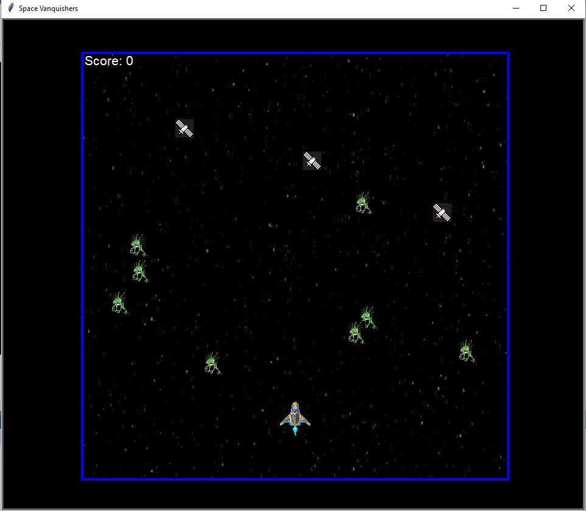
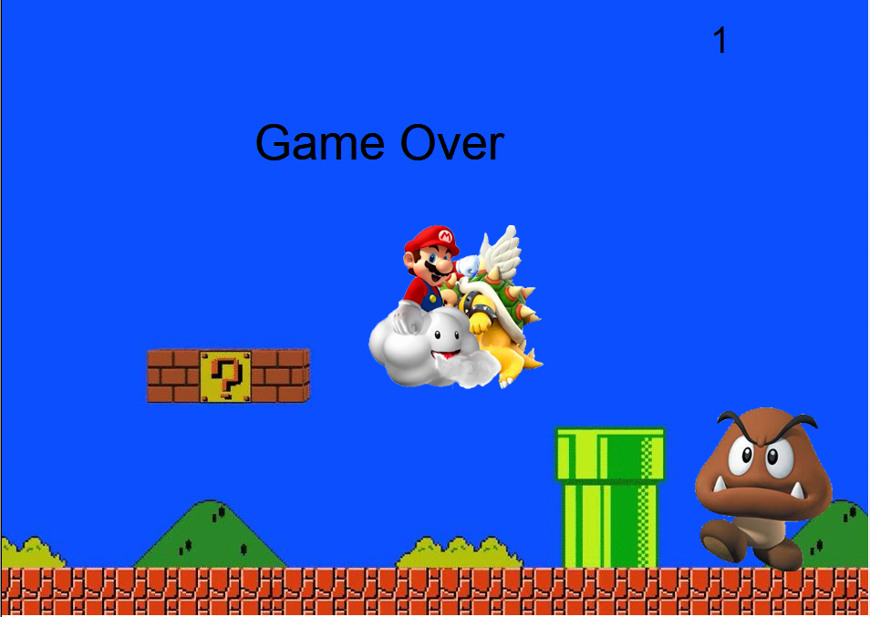

Home
Portfolio
About Me
This is my Portfolio Page!
Lightbot!

Project

Our Project was created using the turtle tool in python. The turtle tool allowed us to have images all work together to create a game that was similar to Alien Invaders. Our goal was to create a game that was similar to that but with added features. Some of the features we added is the ability for the spaceship to not be restrained to only left and right movement, and cool little additions like an explosion on impact. We also created object that you don't want to hit otherwise you would lose points.
Project #2

Our Project was created once more primarily the usage of the turtle tool in Python. We set the images of the 3 different characters being the Goomba, Bowser, and Mario andset them to interact with each other. The objective of the game we created is to have a game where you control Mario, and you want to try and go down and "stomp" on the goombas just like the mechanic in the real game. This earns you a point. However, to add some sort of obstacle into our game we included a Bowser that comes at you that you have to consistently dodge, otherwise you will lose.